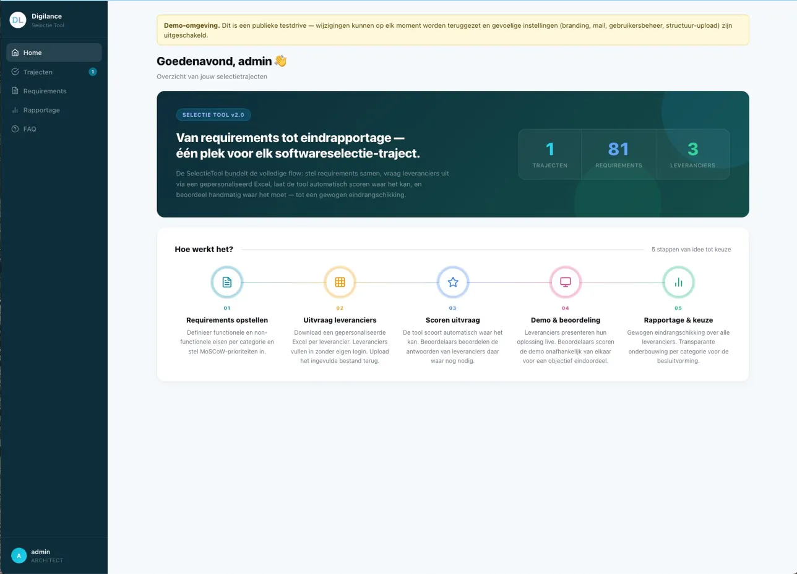
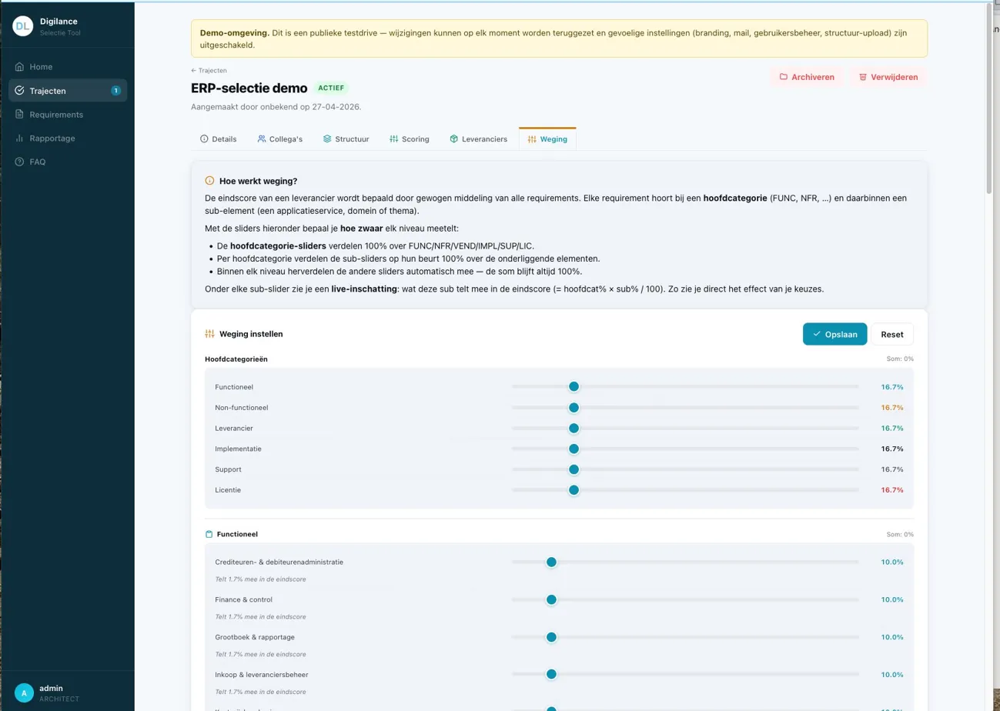
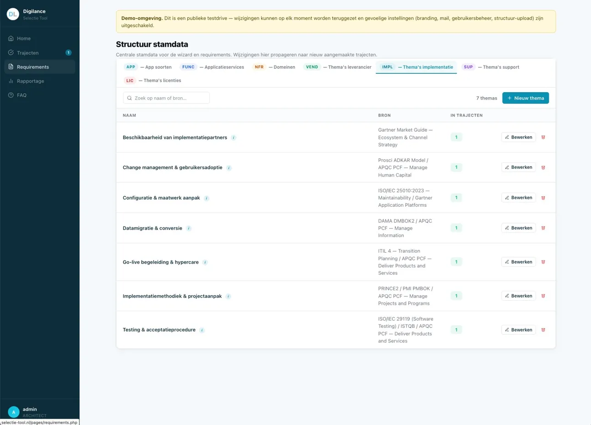
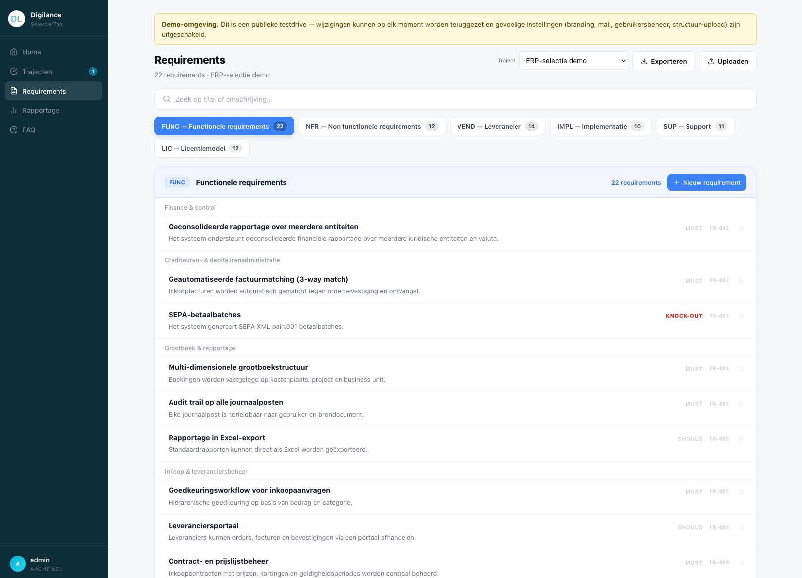

De SelectieTool begeleidt je van requirements tot leverancierskeuze — gestructureerd, transparant en open source.

Softwareselecties zijn al lastig genoeg. Je moet requirements ophalen, prioriteren, leveranciers vergelijken, collega's betrekken, scores verzamelen en dat alles weer samenvoegen tot een onderbouwde keuze. In de praktijk leidt dat tot een wirwar van Excel-bestanden, losse e-mails en vergaderingen zonder conclusie.
Digilance ontwikkelde de SelectieTool om dat anders te doen. Één plek voor requirements, scoring, weging en rapportage. Transparant voor iedereen. Geen Excel meer.
AGPL-3.0, vrij te gebruiken en aan te passen
PHP/MySQL, draait op standaard webhosting
Meerdere beoordelaars, rollen, e-mailuitnodigingen
5 stappen van idee tot keuze
Functioneel, non-functioneel, MoSCoW, knock-outs
Gepersonaliseerde Excel per leverancier, zonder login
Automatisch + handmatig, gewogen per categorie
Onafhankelijk scoren, dag na de demo
Gewogen eindrangschikking, transparant onderbouwd
Een ingevuld ERP-selectietraject staat klaar in de demo.

Wegingen instellen per categorie en subcategorie

Stamdata beheren — applicatiesoorten en thema's

Requirements vastleggen met MoSCoW en knock-out markering
De demo draait live op app.selectie-tool.nl. Je logt in met onderstaande gegevens en ziet een vooraf ingevuld ERP-selectietraject met requirements en leveranciers.
De demo-omgeving wordt periodiek teruggezet. Gevoelige instellingen zijn uitgeschakeld.
Digilance noemt het het "tuinhuisje"-concept: kleine, gerichte applicaties die één probleem goed oplossen. Denk aan een dashboard, een Excel-app of een kleine automatisering — gebouwd voor de eindgebruiker, vaak samen met AI.
Ze kenmerken zich door laag risico: intern gebruik, geen persoonsgegevens, en wegwerpbaar zodra ze niet meer nodig zijn. Geen enterprise-platform, geen licentiekosten, geen vendor lock-in. Gewoon een tool die werkt.
Lees meer over het tuinhuisje-concept →